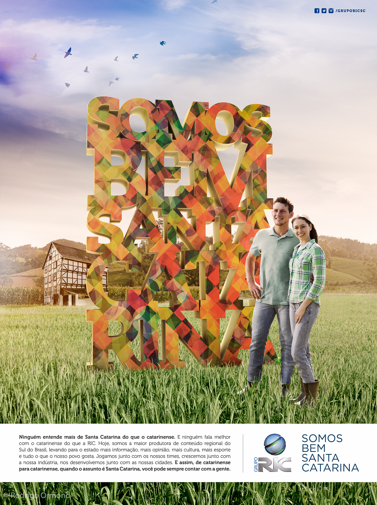

Na Serra Catarinense, existe um lugar onde o tempo desacelera. Onde o luxo não é medido em metros quadrados, mas em momentos. Três dias de produção. Uma família real. Uma história verdadeira.
A Fazenda Bom Retiro é um empreendimento que une condomínio exclusivo, turismo de experiência e a premiada Vinícola Thera — um ativo diferenciado da economia real, encravado entre araucárias centenárias e vistas da Serra Catarinense.
Arquitetura — Estruturas que contam uma visão
Madeira, pedra e vidro em diálogo com a paisagem. Cada volume foi pensado para que o horizonte seja sempre o protagonista. A fotografia precisava capturar essa intenção: não apenas documentar a arquitetura, mas revelar a filosofia por trás de cada escolha construtiva.

Natureza — A Serra como cenário permanente
Araucárias centenárias. Rios de pedra. Ar puro da Serra. A natureza não é apenas o entorno — é parte fundamental do projeto. Trabalhar nessa localização exige respeito ao ritmo do lugar: a luz muda rápido, as nuvens desenham sombras sobre o campo e cada hora do dia oferece uma moldura diferente.
A Produção
Foram três dias de imersão total. Uma família real que abriu as portas do seu retiro para que pudéssemos contar sua história. Isso é raro — e faz toda a diferença no resultado final. Não estávamos criando uma fantasia de lifestyle: estávamos documentando algo que já existia com autenticidade.
A equipe trabalhou do amanhecer ao entardecer, aproveitando a luz da Serra que muda constantemente e oferece condições únicas para fotografia. Piscina aquecida, espaços de wellness e o silêncio profundo da serra entraram no quadro não como props de catálogo, mas como parte de uma narrativa viva.
Thera Vinícola — O ativo que transforma o investimento
A Thera Vinícola é a cereja do projeto. Premiada, com identidade visual forte e uma proposta de enoturismo que complementa perfeitamente o conceito da Fazenda Bom Retiro. Fotografar os vinhedos, a adega e os momentos de degustação foi conectar dois mundos que se completam: o silêncio da natureza e o prazer de uma boa taça.
O resultado é um banco de imagens que serve tanto para o lançamento do empreendimento quanto para campanhas contínuas — materiais para redes sociais, apresentações para investidores e conteúdo editorial de longo prazo.